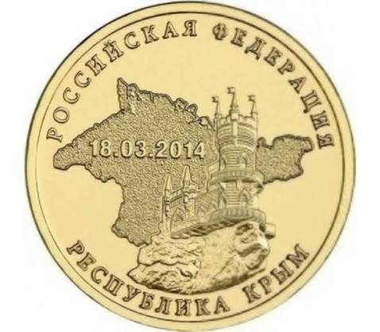

История коллекции
Я начал собирать монеты несколько лет назад, когда случайно получил на сдачу необычную десятку. С тех пор я стараюсь пополнять свою коллекцию интересными экземплярами.

Интересный факт
Факт: Коллекционирование монет научно называется нумизматикой. Самая дорогая монета в истории — американский доллар «Распущенные волосы» 1794 года. На аукционе он был продан более чем за 10 млн долларов!